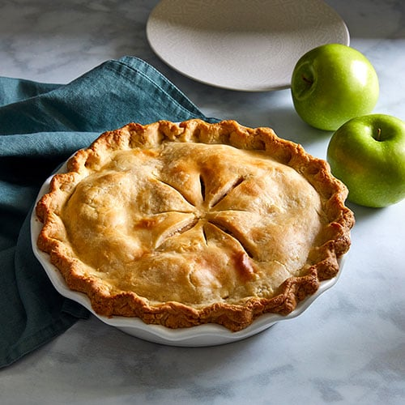

Delicious pie

Description
Meat pie is yummy and pretty easy to make too!It's best served fresh,
you can also make it ahead and freeze or refrigerate it. Serve the pie by itself or with a beef gravy.
Ingredients
- Meat
- Vegetables
- Spices and seasonigs
- Water
- Pie crust
Steps
Here's a very brief overview of what you can expect when you make a classic meat pie at home.
- Boil and mash the potatoes.
- Cook the meat with water,onion,garlic,and seasonings.
- Mix in the potatoes, then fill the pie crus. Cover with the top crust.
- Bake until the crust is browned.